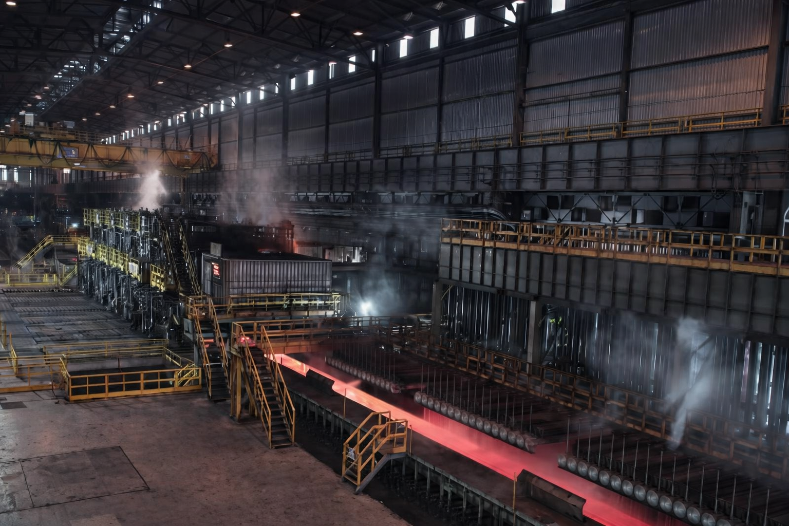
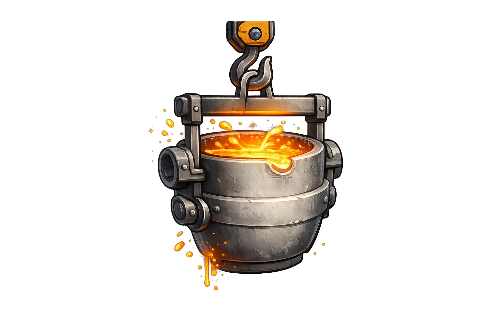
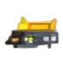
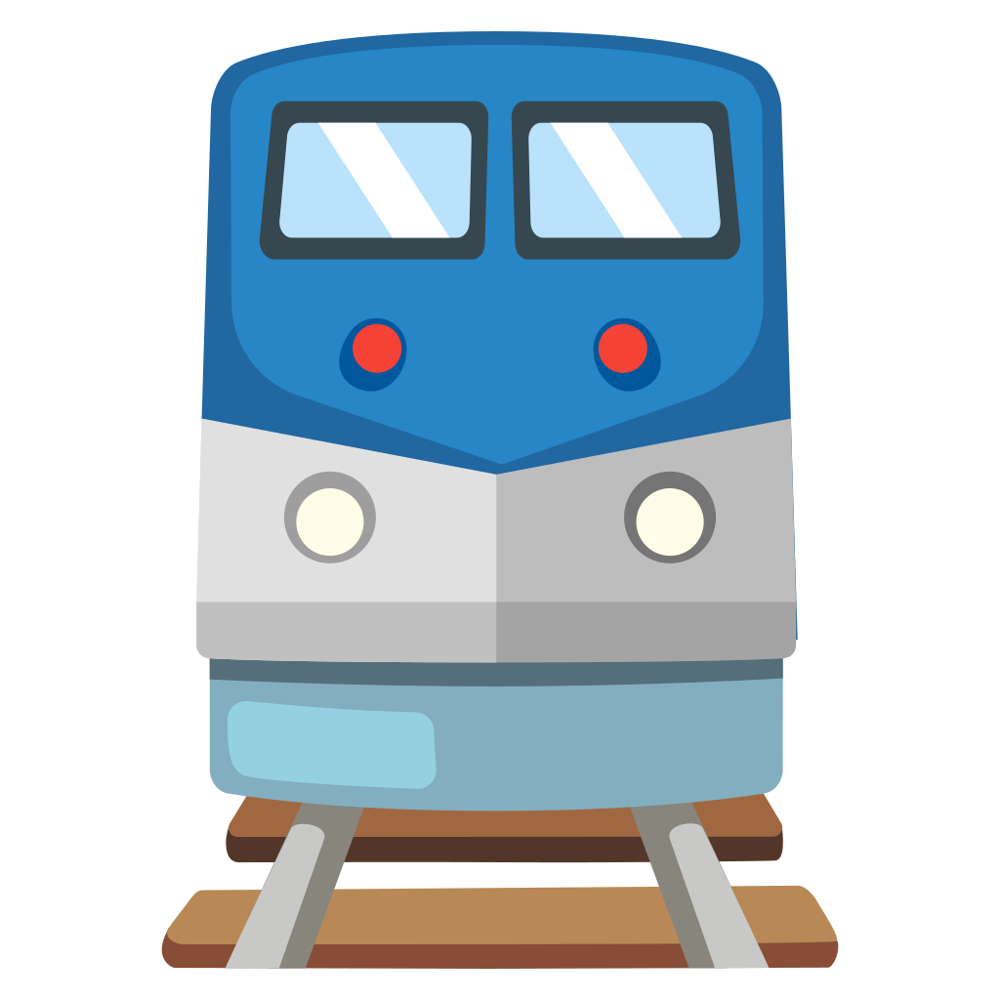
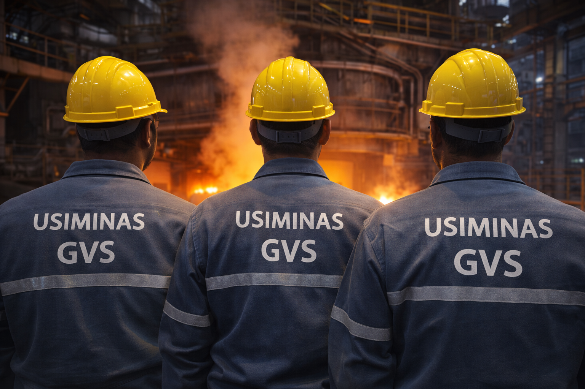
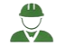
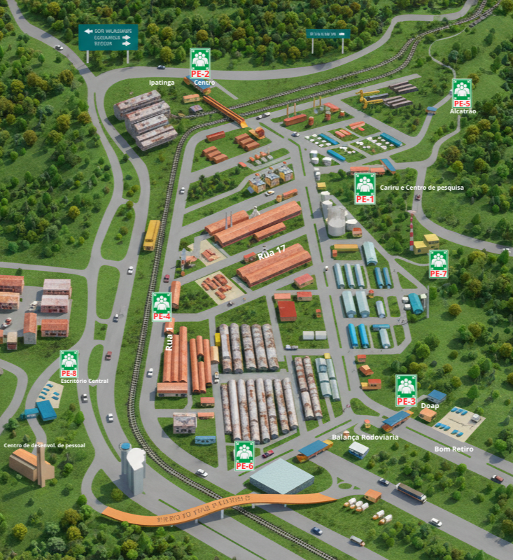

HUB ACIARIALINGOTAMENTO
UM HUB É UM PONTO CENTRAL QUE CONECTA E ORGANIZA DIFERENTES INFORMAÇÕES, SERVIÇOS OU SISTEMAS EM UM SÓ LUGAR.


Panelas
▶

Corte
▶

Despacho
GVS
Grupos Voluntarios deSegurança
Iniciativa que fortalece a cultura de segurança por meio da participação ativa dos colaboradores na identificação de riscos e melhoria contínua dos processos

Impacto Na Area
Redução de Riscos Operacionais

Engajamento das Equipes
Maior Conscientização
Cultura Preventiva Fortalecida
Como fazer parte do GVS?
. Manisfestar interesse junto a Liderança da área
. Participar das Reuniões Periódicas
. Contribuir com a identificação de melhorias
. Atuar como multiplicador de boas Práticas
PONTOS DE ENCONTRO
Visualização Rápida da área da Usiminas

Lista de Pontos
PE-1
PE-2
PE-3
PE-4
PE-5
PE-6
PE-7
PE-8
Estacionamento da Portaria 1 (Cariru)
Hall da Portaria 2 Estacionamento (Centro)
Ponto de onibus Portaria 3 (Doap)
Rua 1 - Entre ruas 16 e 17 Próximo a Balança Ferroviária
Próximo a Portaria 5 (Alcatrão), Rua 153
Esquina da Av.13 com Rua 2 - Próximo a Balança Rodoviária
Subida da TI, Próximo ao portão de emergência do HMC
Estacionamento da Portaria 7 (Escritorio Central)
Escala de Turno
A escala segue o modelo 4x4, com 4 dias de trabalho e 4 dias de folga. As equipes são identificadas pelas letras A, B, C e D, cada uma iniciando o ciclo em dias diferentes